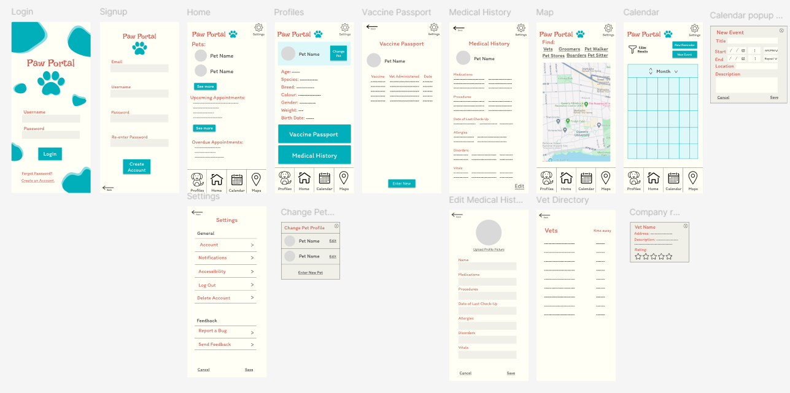

Problem Definition
Pet ownership offers companionship and health benefits, but caring for pets
with special needs—such as elderly animals, those with social anxiety, or
chronic health conditions—poses significant challenges. These pets need
constant attention, frequent medical care, and tailored emotional support,
which can overwhelm owners with busy lifestyles or their own health issues.
This project aims to create a solution that simplifies managing these
demanding care routines, supporting both high-needs pets and their owners.
Through interviews with owners of special needs animals, the project seeks
to gain insights to inform a user-centered design, making pet care more
manageable and less stressful
My Role
- Ideation
- User Interviews
- User Research
- Initial Sketches
- Low, mid, and high fidelity designs
- User Evaluation
Project Goals
- Create a portal where all pet health details can be
stored and found in one place.
- Reduce the cognitive load associated with caring for a
pet with special needs.
Process

Ideation

Related Work

Characterization

Prototyping

Evaluation
Ideation
During the ideation phase of Paw Portal, our team engaged
in discussions about issues we've experienced or observed
in our own lives, aiming to identify a problem that could
be addressed through a new application. We considered various
challenges related to pet ownership, including the difficulties
of managing pet care schedules, tracking health and wellness,
and finding reliable information on pet-related topics.
By drawing on personal experiences and the diverse perspectives
within the team, we sought to pinpoint a specific problem that
resonated with many pet owners. This collaborative brainstorming
helped us to conceptualize Paw Portal, an app designed to
simplify and enhance the pet care experience.
Research and Related Work
The team explored previous research from academic journals that discusses topics such as human-animal interactions,
scheduling and organizational applications, pet owner applications, and mapping applications. The team also researched other
applications in the pet care market.
This research can help inform the design of PawPortal.
User Characterization
The design of PawPortal is tailored to meet the needs of a diverse user group, based on interviews and research.
-
Age Range
Users interviewed were between 20 and 60 years old, reflecting a broad spectrum of pet owners.
The majority were over 50, aligning with the average pet owner age in Canada (45-56). This suggests
the app must address age-related challenges like reduced hearing, motor skills, memory, and multitasking.
-
User Needs
Older users expressed a need for streamlined online booking processes, highlighting the importance of simplicity,
readability, and accessibility in the design. Users, such as David and Jeff, view pets as companions, indicating
the app should cater to emotional and sensitive interactions, akin to those with human family members.
-
Lifestyle
Users tend to be educated, busy, and struggling to balance work with pet care responsibilities. The app must be
easy to learn and use, accommodating users' limited time for learning new tools.
Prototyping Proccess for PawPortal
-
Low Fidelity
The initial stage included determining main functionalities like medical tracking, general information storage, and business locators.
A rough sketch was created, leading to a low-fidelity prototype incorporating Human-Computer Interaction principles, such as grouping
related elements and using consistent design features to avoid confusion.
-
Mid Fidelity
Based on feedback from the low-fidelity prototype, a mid-fidelity prototype was developed in Figma.
Adjustments were made to button sizes, labels, and overall navigation to address user confusion and enhance usability.
Features like appointment management and additional pet profile fields were integrated.
-
High Fidelity
The high-fidelity prototype involved refining visual elements such as colors, fonts, and layout in Figma.
User feedback from the mid-fidelity prototype led to clearer labels, more prominent buttons for adding pets,
and enhanced map features. Consistent design principles were applied to ensure a pleasant and intuitive user experience.

 Click here
Click here
for a link to the Figma mockup of PawPortal!
User Evaluation
Diverse user testing was conducted with participants representing different age groups and technological familiarity.
Testing was completed by having users interact with the mockup of the application and getting feedback from the users.
Then the users are asked open ended questions like 'Can you describe your experience with the application' and 'What if anything was confusing
about navigating the app'.
The testing provided positive feedback on the application’s usability, helpfulness, and satisfaction. However, issues such
as unclear labels and lack of feedback for unexpected actions were identified. Recommendations for future improvements
included adjusting label colors and adding feedback for unexpected actions to enhance usability and clarity.